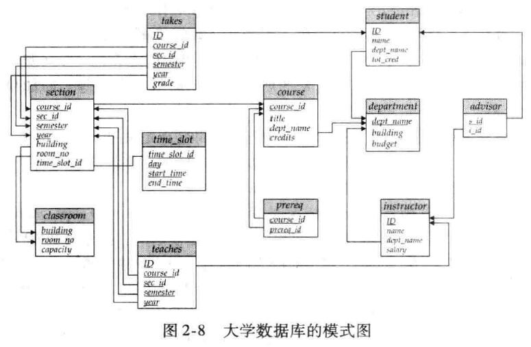

数据库期末复习笔记第一弹！
# 关系模型与关系代数
# 基本概念
关系数据库 (relational database) 是一些表的集合。我们称一个表为一个关系 (relation), 表中的每一行称为一个元组 (tuple), 表中的每一列称为一个属性 (attribute).
在数据库中，我们需要区分数据库模式 (database schema) 和数据库实例 (database instance). 前者是一个组织逻辑，而后者是前者实现的一个快照。类似地，我们称关系实例 (relation instance) 是一个关系 (表) 的快照。
数据库三要素：数据结构、数据操作和数据完整性约束。
# 数据库与映射
数据库的实质是多重集上的映射。对于一个关系上的任一属性，我们称其的所有取值组成的集合为一个域 (domain). 如果域中的元素是不可再分的，则称该域是原子的 (atomic).
建立一个数据库，一个重要要求是采用关系中的不同属性区分各个元组。这事实上是建立了数个属性值到单一元组的映射。
# 码
超码 (super key) 是一个或多个属性的集合，这些属性的组合可以使我们在一个关系中唯一地标识一个元组。若集合 是一个超码，且 的任一真子集都不是超码，那么称这样的最小超码为候选码 (candidate key).
我们用主码 (primary key) 这个术语来代表被数据库设计者选中的、主要用来在一个关系中区分不同元组的候选码。
若关系模式 的属性中包含关系模式 的主码，那么该属性称为参照 的外码 (foreign key).
# 模式图
下图是一个典型的模式图。

模式图中的视觉元素及含义如下：
| 视觉元素 | 含义 |
|---|---|
| 矩形 | 关系 |
| 下划线 | 主码 |
| 箭头 | 外码依赖 |